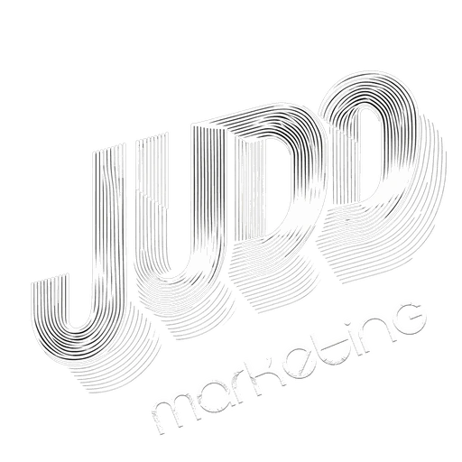

Guion y storyboard · video vertical 9:16
“I’m one of them. I’m Junior. I left Venezuela in 2015, escaping Maduro’s dictatorship.”

“This video found you for a reason. Tell me what’s broken. Together, we’ll fix it.”
“Tell me your problem. For ninety-nine dollars, I’ll give you a diagnosis and an action plan.”